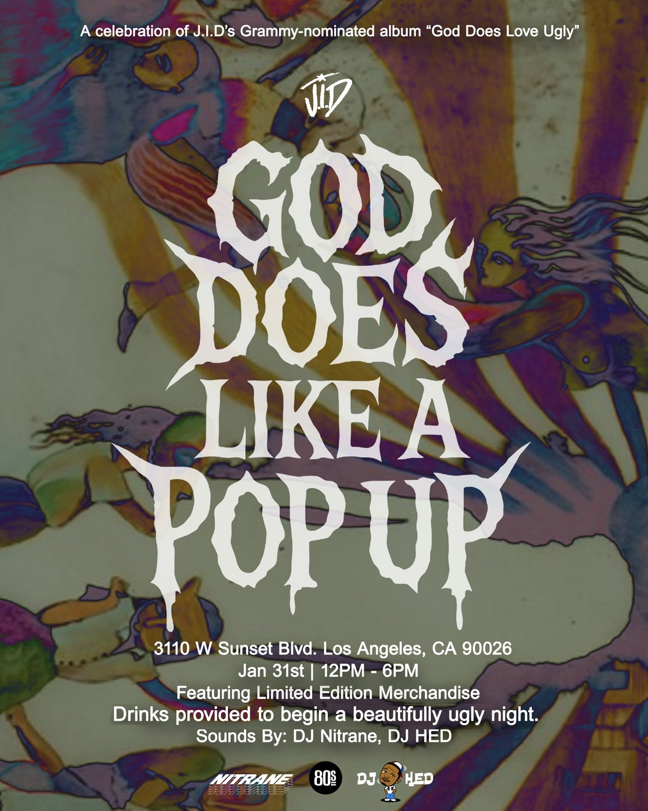
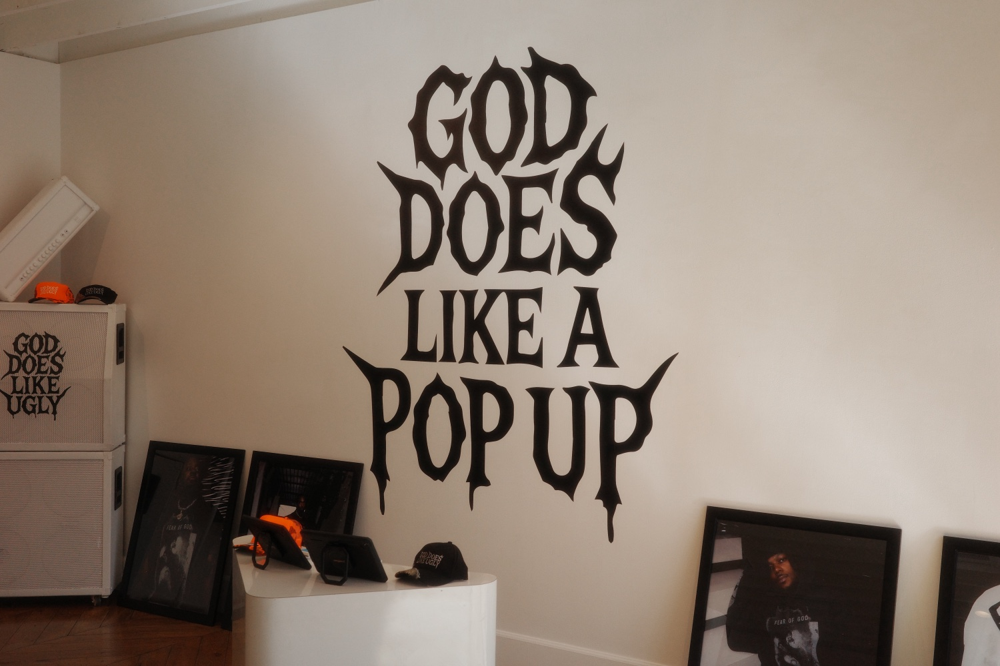
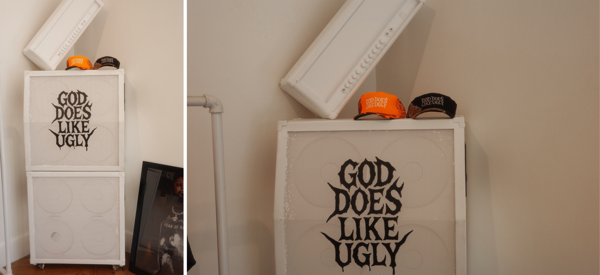
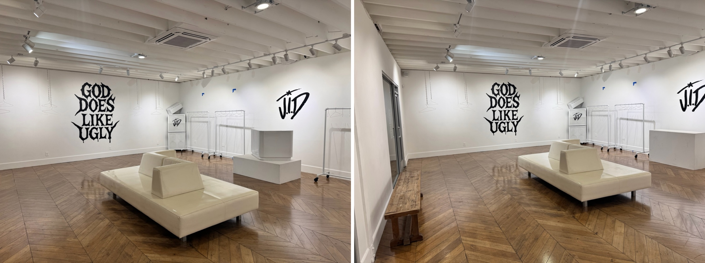
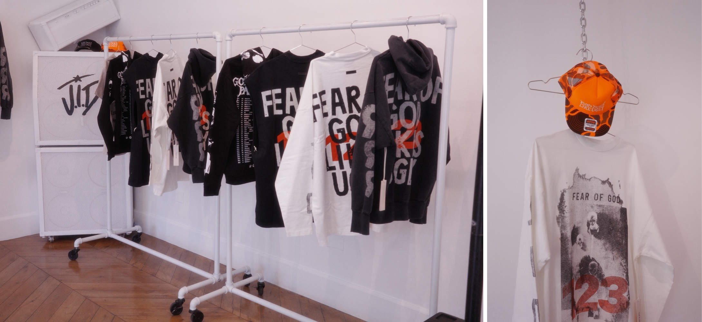
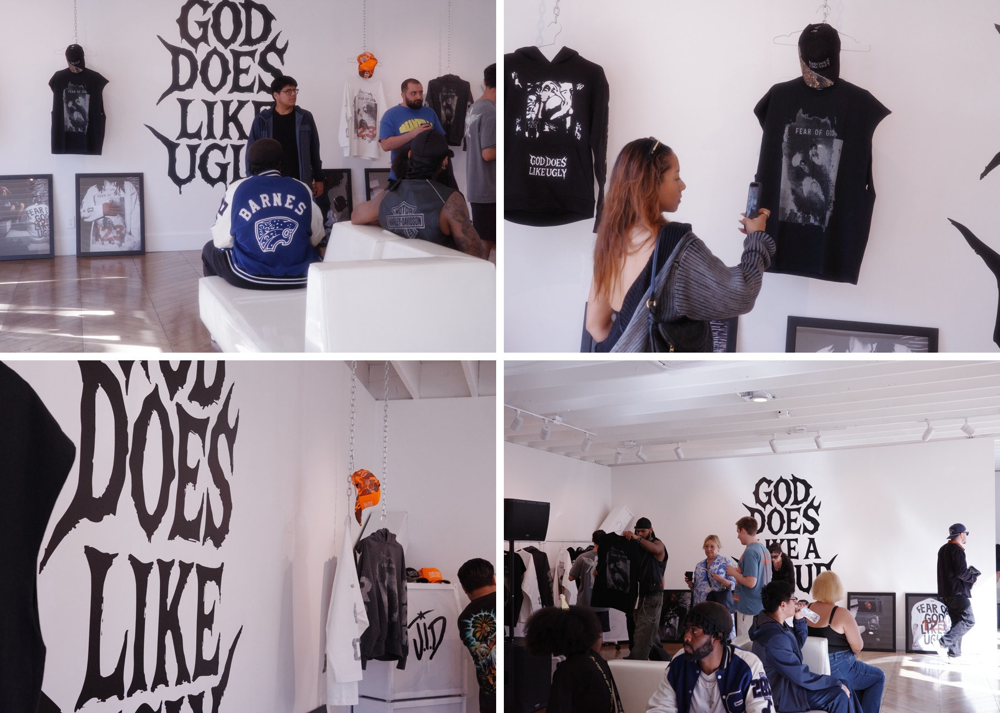

Project 05 — Activation / Album Pop-Up, Los Angeles
J.I.D / God Does Like a Pop Up
About the project
God Does Like a Pop Up: a one-day celebration of J.I.D's Grammy-nominated God Does Like Ugly on Sunset Boulevard, with the album lettering across the walls, framed artwork, and a limited run of merchandise.
PAZL designs and produces activations end to end: the space, the objects inside it, and the pieces people leave with.






Credits
- Activation design & production
- PAZL
- Creative direction
- Fred Saint Foster
- Artist
- J.I.D